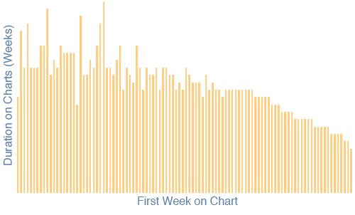

The Whitburn Project - Curiosity
I was highly intrigued by Andy Baio's write-up of The Whitburn Project, as well as the tidbits of knowledge he and others found. Such a vast amount of well organized data begs to be reviewed. As you might already know, I host copies of the Billboard Year-End Charts on my site, and have enjoyed looking through those and hearing from others who have done the same. Weekly data? Much more entertaining. Although there's a lot to see when looking through the charts, I thought some of the following bits were interesting.
Artists with Multiple Hits in Same Week
I looked at Artists that had multiple songs in the Top 100 during the same week. Surely it would show some kind of superiority. The Beatles were the unsurprising winner here. During one week in 1964 they had 14 songs in the Top 100. You read that right, 14 songs. They had weeks of 14, 12, 10, 8, 7, and many others. The first other artist to break into their dominance (or who's dominance was broken by The Beatles) was Elvis. Only three other artists have had 5 or more songs in the Top 100 in the same week–Sam Cooke \& Johnny Mathis both had five in a week. The remaining artist: Hannah Montana. She had seven songs in the top 100 the week of 11/11/2006. I didn't understand her popularity, but now I do. I'm completely unfamiliar with her music, but to be surrounded by such exclusive company is very impressive.
Staying Power
I was curious about the staying power of an artist. Sure, everybody knows the Macarena, but how about musicians as a whole? How capable is an artist of making a single, and keeping it on the charts? Of artists with at least two songs on the charts, Blues Traveler has the longest average staying power - 41 weeks (though they only had two songs appear). Creed wins among artists with at least five songs (35 weeks), Nickelback wins among those of at least 10 (28 weeks), Usher wins among those of at least 15 (25 weeks), Mariah Carey wins among those of at least 20 (she had 32 songs, averaging 19 weeks each), R. Kelly averaged 18 weeks for his 35 songs, and our ultimate winner is Madonna, who wins among artists with 40+ songs on the charts (with a 16 week average).
Repeat Performances
3203 Artists pulled off the ~~elusive~~ one hit (wonder) status (with an average staying power of nine weeks), and 776 songs lasted just one week. Elvis rocked the charts with 140 of his songs, then James Brown with 92, and The Beatles rounded out the top three with 78.
One Week Wonders
As I said before, 776 songs lasted just one week on the charts. The highest starting position of a song to never return to the charts is 22nd. Who would have thought a Beatles cover would have such great, yet crappy success? (Across the Universe, from the motion picture of the same name appeared for one week in late 2006). 82% of the one week wonders start at 90th or below. So, if you've made it onto the charts above there, you're doing alright, but you'd be much better starting out above 80.
Best Starting Position
Speaking of starting out, where's the best place for a song to enter the charts? More songs enter in the 90th position than any other position on the charts, but if I want to stick around the longest... where's the best place to aim for?

That peak is 26, which coincidentally has an average lifespan of 26 weeks, though 9th and 19th look very tempting as well. It's fairly obvious that you want to avoid starting really low, but starting at 18th is generally worse than starting at 76th. If you can make it to 1st place after that first week, you have the best chance of sticking around the longest. By the third week, if you're at number one or two, you're doing great, but by the fourth week you'll need to be sure you have the top song, because it doesn't look very good below that.
As I've barely scratched the surface of what I wanted to see, I'll next try to come up with some more time-specific info. I'm curious how things trend over time, and although Andy and some of the others pulled out some interesting bits, I'll be curious to see others. Stay tuned!
Prior: It's Not All About the Design Next: Newer Site Design